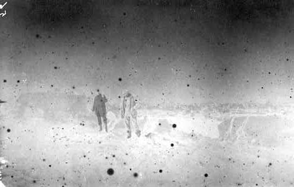

Wednesday, January the 16th, 2013
back to: title, date or indexes
The diary of Robert Falcon Scott on this day in 1912:

Camp 68. Height 9,760. T. -23.5°. The worst has happened, or nearly the worst. We marched well in the morning and covered seven and a half miles. Noon sight showed us in Lat. 89° 42′ S., and we started off in high spirits in the afternoon, feeling that tomorrow would see us at our destination. About the second hour of the march Bowers' sharp eyes detected what he thought was a cairn; he was uneasy about it, but argued that it must be a sastrugus. Half an hour later he detected a black speck ahead. Soon we knew this could not be a natural snow feature. We marched on, found that it was a black flag tied to a sledge bearer; near by the remains of a camp; sledge tracks and ski tracks going and coming and the clear trace of dogs; paws—many dogs. This told us the whole story. The Norwegians have forestalled us and are first at the Pole. It is a terrible disappointment, and I am very sorry for my loyal companions. Many thoughts come and much discussion have we had. Tomorrow we must march on to the Pole and then hasten home with all the speed we can compass. All the day-dreams must go; it will be a wearisome return.
Hooting Yard on the Air, January the 17th, 2013 : “Bobnit Tivol's Diary 9.1.26” (starts around 25:44)